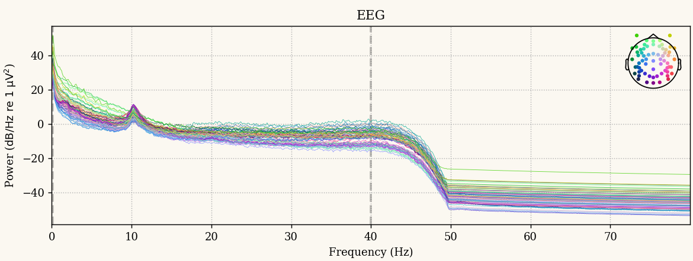
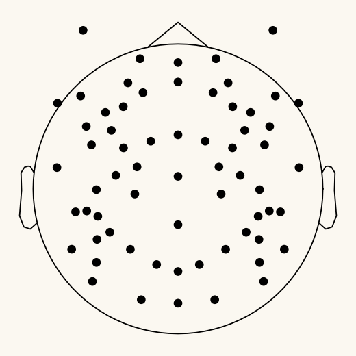
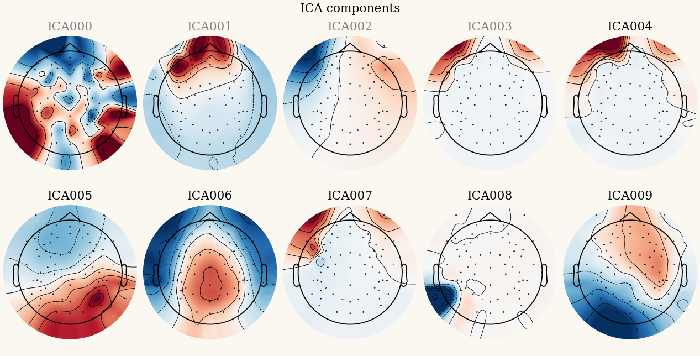
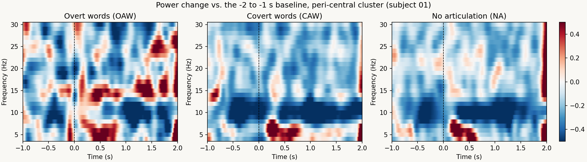

03
The dataset, and what it looks like
One anonymised participant from the lab's study of alpha-band power during covert and overt articulation (Gundapaneni, Sengupta, Mandal & Maganti, in press): a 22-minute, 250 Hz, 64-channel EGI recording with 200 cued trials across five conditions. Participants work with the same file, the same event codes and the same preprocessing decisions that appear in the published Methods. Every figure below was produced from that recording with the bootcamp's own pipeline.




